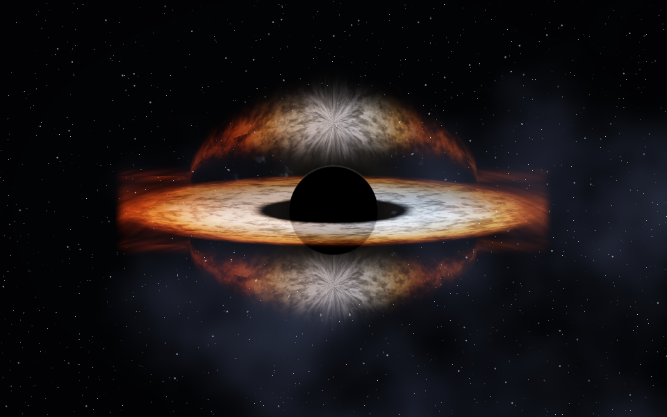
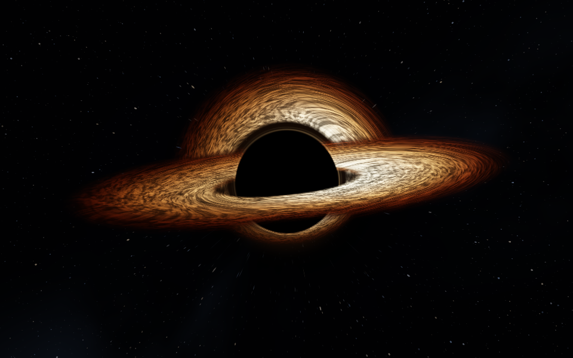
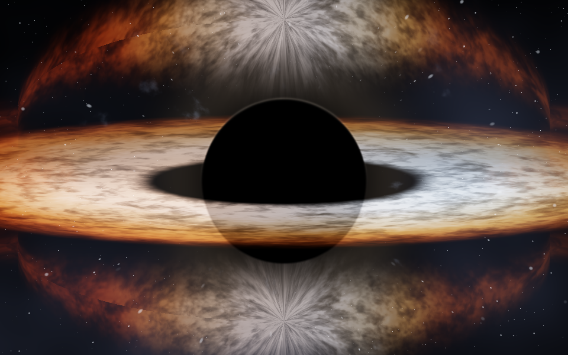
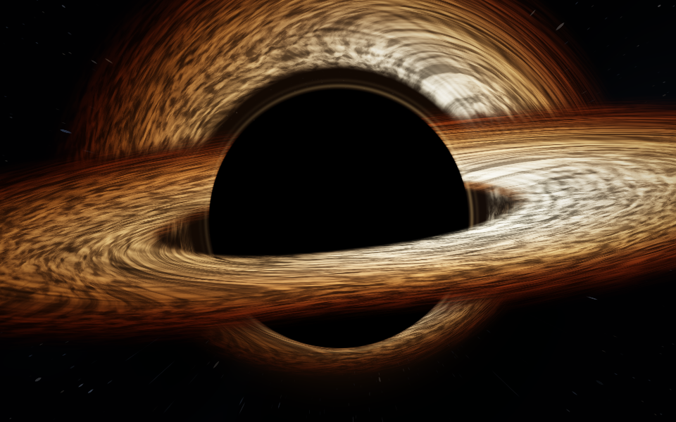
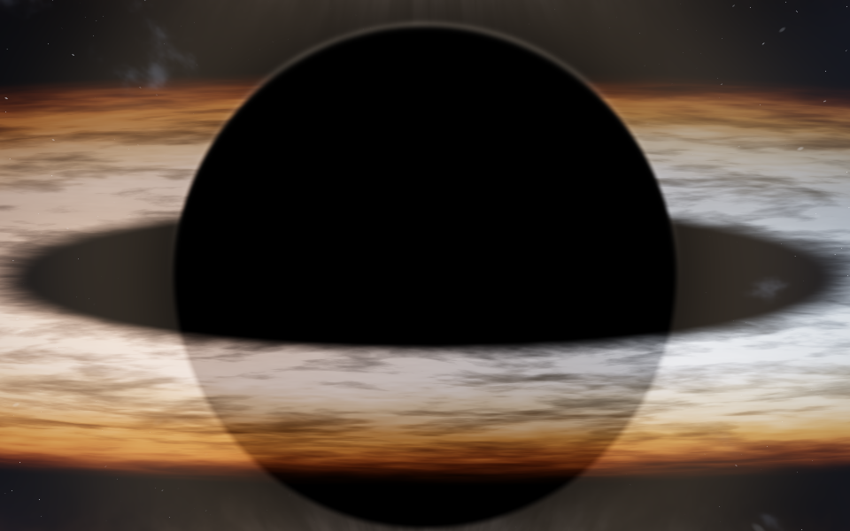
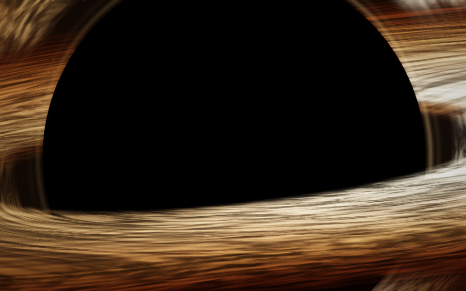
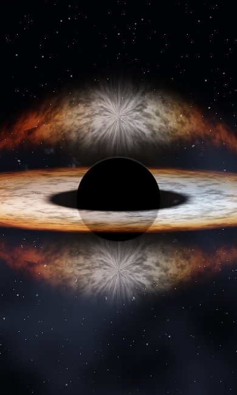
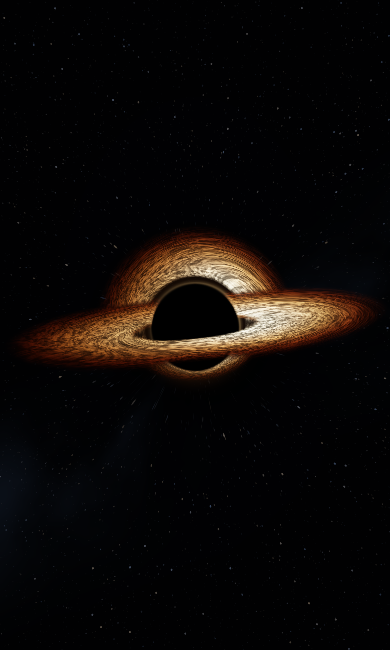
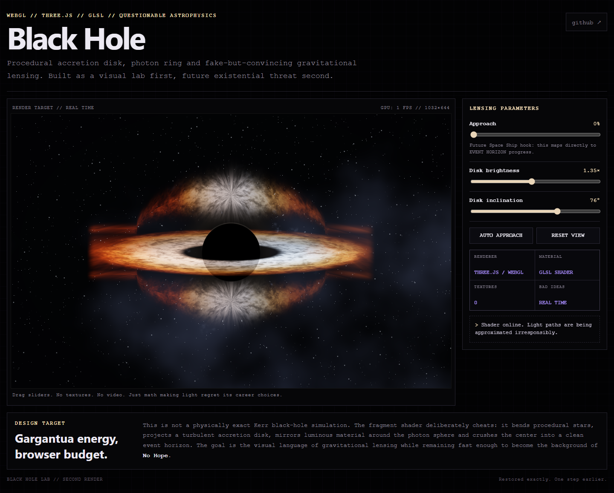
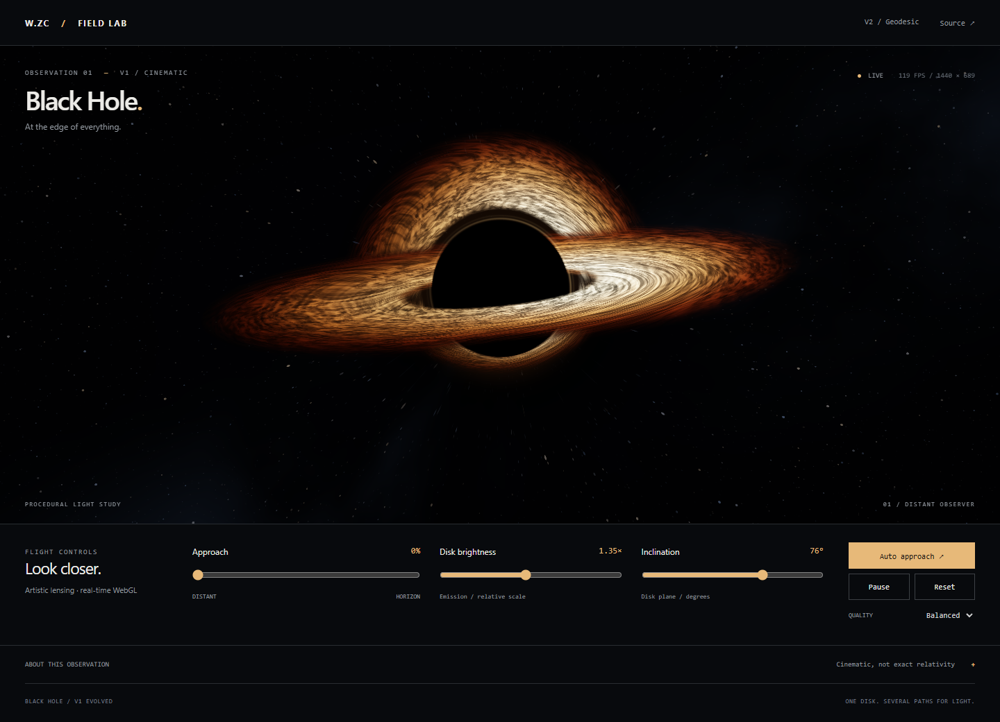

A larger observation window, orbital filaments, a clean shadow, layered disk images and controlled amber light. Artistic WebGL rendering; not an exact relativistic simulation.
Frames captured directly from the browser's WebGL renderer at fixed 1/24-second simulation intervals. This is a deterministic motion sample, not a real-time performance recording.
Equivalent renderer-only captures: 960 × 600, time = 12 seconds, approach = 0%, brightness = 0.375, inclination = 76°. New composition and fit are intentional.






Same 390 × 650 rendering surface and parameters. Portrait fitting now starts with the entire disk inside the frame.



